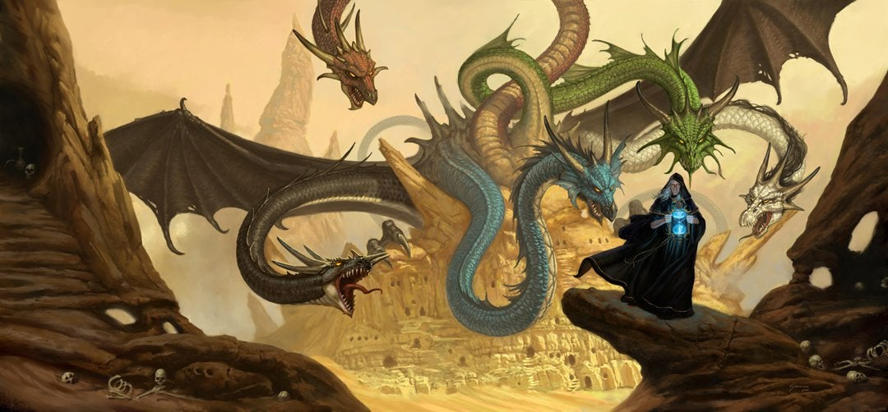

About Raistlin
Raistlin Majere is a fictional character from the Dragonlance series of books created by Margaret Weis and Tracy Hickman. Raistlin played an extensive role in the two main series of books, particularly in Dragonlance Legends in which he was both primary protagonist and antagonist. He is twin brother to Caramon Majere, half-brother to his protective sister Kitiara uth Matar, and a significant member of the Heroes of the Lance.
Distiguishing Features
- Hourglass Pupils
- Golden Skin
- Poor Health (Coughing Fits)
- Silver Grey Hair
Notable Characters
During his life on Krynn Raistlin had what some would call friends but what the mage would call acquaintances. After donning the black robes Raistin would use the people closest to him to achineve his own dark ends.